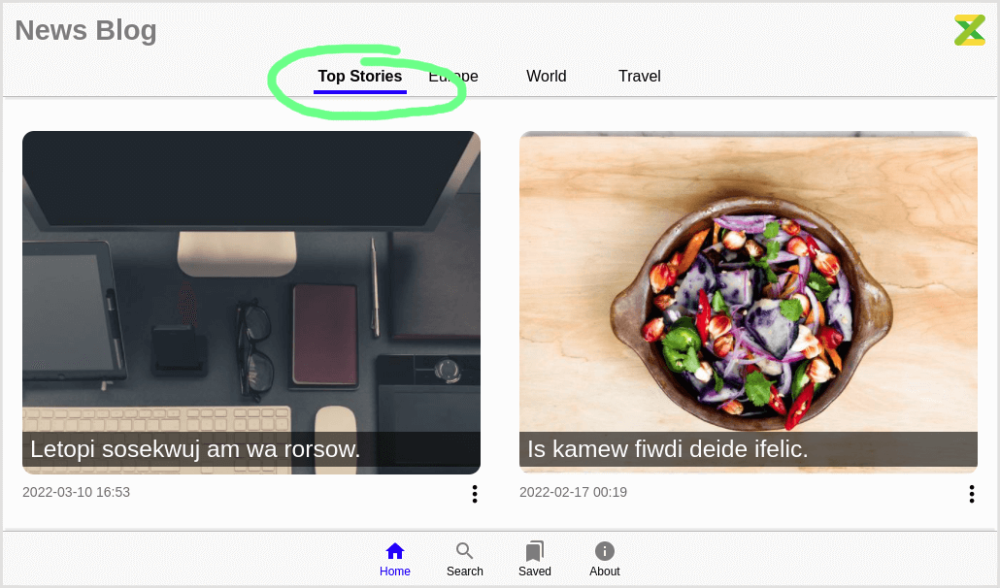
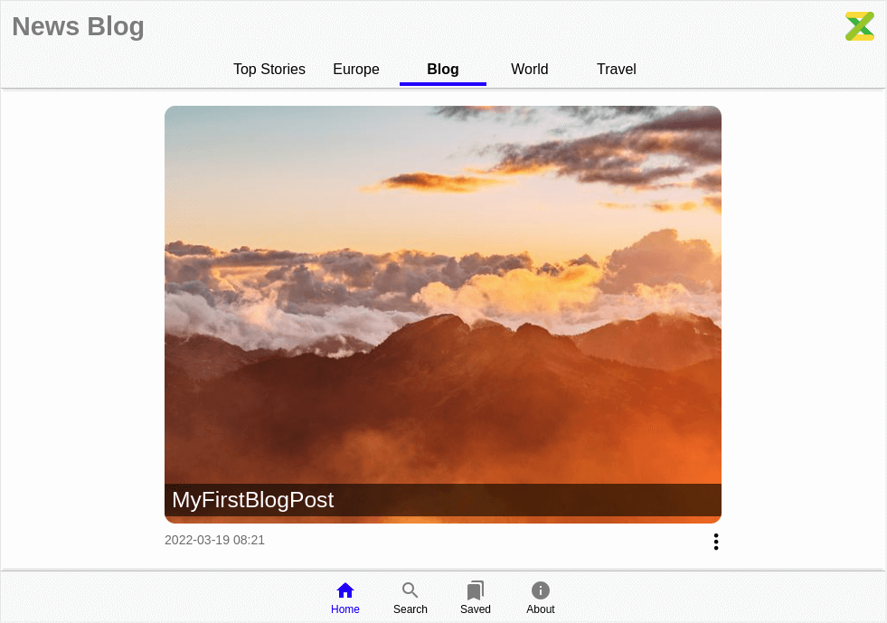

This template is based on zuix-web-starer. It is recommended to read its documentation
to get started with zuix.js templates.
Creating a new project
To create a new starter project using this template (news-blog), enter the following command:
npx zuix new my-webapp -t news-blogthe new project structure will be created in the folder my-webapp.
Change directory to the new project folder:
cd my-webappStarting development server
The development server will listen by default on port 8080 and serve files from the build folder ./docs.
It will also watch for file changes in the ./source folder and build them as required, automatically refreshing the browser
page.
npx zuix startOnce started you can open the web browser and load the website using the access URLs given in the console output.
[Browsersync] Access URLs:
-----------------------------------
Local: http://localhost:8080
External: http://192.168.1.50:8080
-----------------------------------
[Browsersync] Serving files from: docs
[Browsersync] Watching files...The main project folder is the ./source folder, where all website files are located. In particular, the ./source/content folder,
contains all pages' content, implemented as plaintext files using Markdown syntax.
All other structural and page layout bits will be compiled automatically by the site generator.
Managing content
Included with this web starter you will also find demo pages that can be removed by manually deleting the
./source/content/ folder, or using the zuix CLI:
npx zuix wipe-contentAdding a new page
Pages are organized into sections. Each section can be accessed from the header bar in the home page.

Sections and pages can be easily added with the following command:
npx zuix add -s <section_name> -n <page_name> -fm "<field>: <value>"Where the -s option is used to specify the name of the section under with the new page will be grouped, while the -n
option is used to specify the name of the page. Both name must be file-name friendly, the kebab-case
convention is adopted here.
The -fm option can be used to specify additional front-matter fields.
For example, the following command will add a new page in a section called also enabling the code highlighter:
npx zuix add -s blog -n my-first-blog-post -fm "options: highlight"
The new page file will be ./source/content/blog/my-first-blog-post/index.md, and the blog folder will be automatically created
if it doesn't exist. The blog folder will also have an index.liquid file that just contains front matter data of the section,
and that can be used to customize the title and the display order in the homepage.
Components
This web-starter is a component based web application that takes advantages of zuix.js library, a very versatile and fast library for creating components.
The following components are used:
- Auto-hiding header, to allow a full immersive experience while reading pages on small screens
- Menu overlay, that can be used to quickly navigate within a page content, and that auto hides when the page is scrolled
- Scroll helper, used in some of the above components to handle page scroll events, and that can eventually
be used to "watch" elements position and trigger events as they become visible on screen - Gesture detector, used in various components to detect gestures
- View Pager, to implement horizontal scroll with snapping to switch from section to section
- List View, for rendering lists such as the search results and bookmarks
All the above components are part of zKit library, a library of components built with zuix.js.
To learn more about how to create and load components, see zuix.js website.
Files structure in brief
Template engine folders:
./source/_data # data folder
./source/_filters # filters
./source/_inc # includes and layouts
zuix.js components folders:
./source/app # user-defined components specific to the app
./source/lib # reusable component such as zKit components
Global asset files and folders:
./source/images
./source/js
./browserconfig.xml
./favico.ico
./humans.txt
./manifest.json
Site search index and SEO:
./source/search-index.json.njk # search-index builder script
./source/robots.njk
./source/sitemap.njk # sitemap generator script
Main pages:
./source/index.liquid # landing page
./source/ui/about/index.liquid # about page
./source/ui/home/index.liquid # home page
./source/ui/saved/index.liquid # bookmarks page
./source/ui/search/index.liquid # search page
Content pages:
./source/content
it's a good practice to have each content page implemented with its own folder and a index.md file in it.
In the same folder can be placed other sub-folders for page-local assets, such as images.
./source/content/travel/my-first-cruise/images/picture1.png
./source/content/travel/my-first-cruise/index.md
./source/content/travel/my-first-cruise/images/picture1.png
./source/content/travel/my-first-cruise.md
./source/content/travel/images/picture1.png
./source/content/travel/my-first-cruise.md